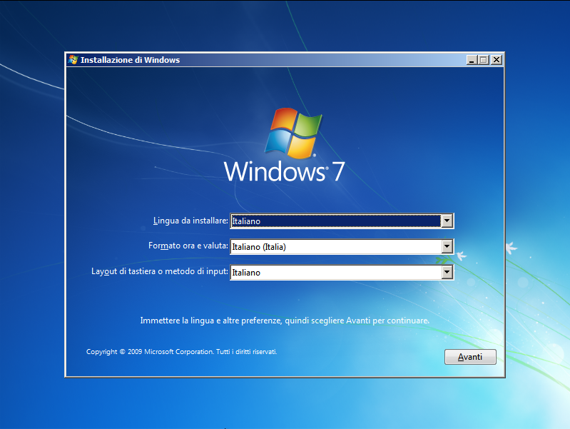

Laboratorio di installazione
Questo laboratorio servirà per acquisire le nozioni di installazione di Windows 7 sfruttando il nuovo strumento di installazione su VHD.
Un breve video sulla preparazione della macchina virtuale che ospiterà l'installazione (Io uso vmware ma va bene anche VirtualBox)
Creazione macchina virtuale
Apriamo Vmware, creiamo una nuova macchina virtuale scegliendo di installare noi il sistema (scelta da fare per evitare che vmware effettui alcune operazioni per noi), una volta deciso dove mettere il disco virtuale andiamo a passare al configuratore del cd rom l'imamgine iso di windows 7, aumentiamo la ram a 2 giga per essere più reattivi e iniziamo l'installazione vera e propria.
Preparazione VHD
Ora che abbiamo preparato la macchina virtuale andiamo ad iniziare l'installazione e a preparare il nostro vhd su cui installare il sistema quindi una volta avviata la macchina virtuale quando ci si presenta la schermata in questa figura:

Premiamo la combinazione di tasti Maiusc+F10 (Maiusc è Shift) che ci aprirà una schermata di dos da cui dare i comandi:
c:
cd\
md VHD
diskpart
Questi comandi non fanno altro che sportarci nel disco C (il prompt si aprirà sulla partizione X ovvero il sistema minimale caricato in ram che serve a far girare l'installer), spostarci nella root del disco C, creare la cartella VHD (o come la si vuol chiamare) e avviare il programma di partizionamento DISKPART
Una volta nel prompt di diskpart diamo in sequenza i comandi per creare il file del nostro disco virtuale, selezionarlo, renderlo attivo e poi uscire
create vdisk file=C:\VHD\lab.hd type=fixed maximum=30000
select vdisk file=C:\VHD\lab.hd
attach vdisk
exit
exit
Ora che il prompt si chiude possiamo passare all'installazione del sistema attraverso la voce "Personalizzata"